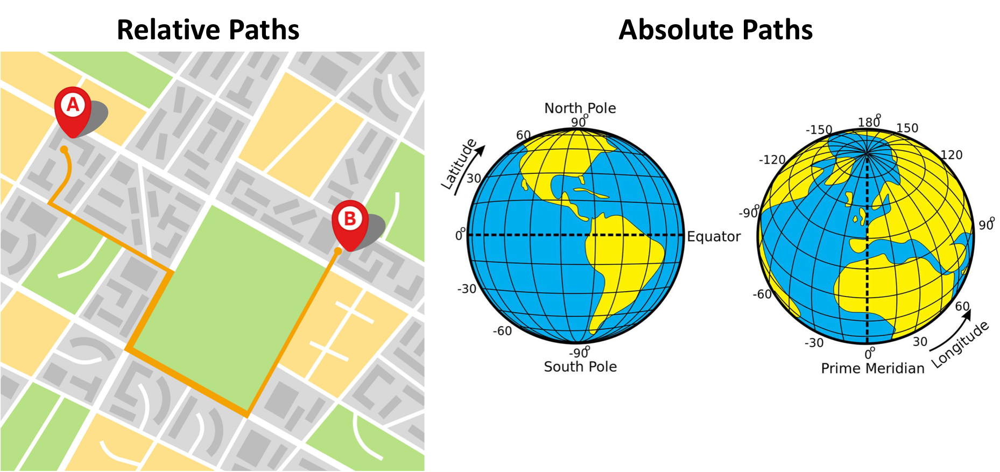

Learning Objectives for Today's Lesson
- Understand the organization of the Filesystem
- Distinguish between Full versus Relative paths
- listing, copying, creating, moving and removing data
Navigating the Filesystem
A filesystem organizes a computer's files and directories into a tree structure.
- The first directory in the filesystem is the root directory. It is the parent of all other directories and files in the filesystem. That
/or root is the 'top' level. - Each parent directory contains child directories and/or files.
- Each child directory can also contain more files
Note: When you log in to a remote computer you land on one of the branches of that tree, i.e. your pre-designated "home" directory that usually has your login name as its name (e.g.
/users/username).
To navigate the file system with ease we will now introduce the concept of tab completion.
Shortcut: Tab Completion
tab
caps lock
Typing out file or directory names can waste a lot of time and its easy to make typing mistakes. Instead we should get in the habit of using tab complete as a shortcut. The tab key is located on the left side of your keyboard, right above the caps lock key. When you start typing out the first few characters of a directory name, then hit the tab key, Shell will try to fill in the rest of the directory name. Let's put this into practice now.
Navigate into the raw_fastq directory and see what's inside. Remember to use tab!
cd raw_fastq/
Class Exercise
List the file sizes of raw_fastq/ folder.
Paths
Where is the raw_fastq folder in relation to our home directory?
To answer this, let's learn more about the "addresses" of directories, called "paths" and move around the file system.
Let's check to see what directory we currently are in. The command prompt tells us which directory we are in, but it doesn't give information about where the raw_fastq directory is with respect to our "home" directory.
The command to check our current location is pwd, this command does not take any arguments and it returns the path or address of your present working directory (the folder you are in currently).
pwd
In the output above, each folder is separated from its "parent" or "child" folder by a "/", and the output starts with the root / directory. So, now you are able to determine the location of raw_fastq directory relative to the root directory.
But what if you would like to navigate back to your home directory? To do so, one way would be to type cd ~ and this will bring you back to your home directory. The "~" is an abbreviation for the current user's home folder.
cd ~
After doing this what is your present working directory now?
pwd
It should look something like this:
/users/p/d/pdrodrig
This should display a shorter string of directories starting with root. This is the full address to your home directory, also referred to as "full path".
Using paths with commands
You can do a lot more with the idea of stringing together parent/child directories. Let's say we want to look at the contents of the raw_fastq folder, but do it from our current directory (the home directory). We can use the list command and follow it up with the path to the folder we want to list!
1 2 | |
## chr1.fa chr1-hg19_genes.gtf
Remember that these two scripts indicate the same path:
/users/p/d/pdrodrig/unit1_unix/reference_data
EQUALS
~/unit1_unix/reference_data
Class Exercise
Change directories from ~ (home) to raw_fastq in a single step then print working directory.
Answer
cd ~/unit1_unix/raw_fastq
Now, what if we want to move back up a level back into the unix_lesson directory?
Type cd unix_lesson and see what happens.
unix_lesson/: No such file or directory
Unfortunately, that won't work because when you say cd unix_lesson, shell is looking for a folder called unix_lesson within your current directory, i.e. raw_fastq.
Can you think of an alternative?
- You can use the full path to
unix_lesson - You can do cd .. (allows you to move one folder up)
cd ..
File Names
Probably one of the most frustrating parts of bioinformatics is the lack of consistency with how files are labeled. Files often have obscure names that is only relevant to the researcher, or have names that are very similar to one another. But nonetheless we will persevere!
Let's go into the raw_fastq, then type ls Mov10_oe_, followed by pressing the tab key once:
1 2 | |
Notice that nothing happens!!
The reason is there are multiple files in the raw_fastq directory that start with Mov10_oe_. As a result, shell does not know which one to fill in. When you hit tab a second time again, the shell will then list all the possible choices.
ls Mov10_oe_<tab><tab>
## Mov10_oe_1.subset.fq Mov10_oe_2.subset.fq Mov10_oe_3.subset.fq
Now you can select the one you are interested in listed, and enter the number and hit tab again to fill in the complete name of the file.
ls Mov10_oe_1<tab>
Tab completion is your friend! It helps prevent spelling mistakes, and speeds up the process of typing in the full command. We encourage you to use this when working on the command line.
Relative paths
We have talked about full paths so far, but there are other ways to specify paths to folders and files without having to worry about the root directory.
Let's create a folder in raw_fastq using the mkdir command.
syntax: `mkdir name-of-folder-to-be-created`
mkdir data
Now let's navigate back into unit1_unix
Class Exercise
Change directories from unit1_unix to data in a single step.
Answer
cd raw_fastq/data/
In this case we are using a relative path, relative to our current location - wherein we know that the raw_fastq folder is within unit1_unix and data is within the raw_fastq folder.
Synopsis of Full versus Relative paths
A full path always starts with a /, a relative path does not.
A relative path is like getting directions from someone on the street. They tell you to "go right at the Stop sign, and then turn left on Main Street". That works great if you're standing there together, but not so well if you're trying to tell someone how to get there from another country. A full path is like GPS coordinates. It tells you exactly where something is no matter where you are right now.
You can usually use either a full path or a relative path depending on what is most convenient. If we are in the home directory, it is more convenient to just enter the relative path since it involves less typing. However, when using some programs, full paths are required.

Example using Full Paths:
It can get really complex, real fast!
samtools merge WT_Ikaros_rep2_merged.bam
/gpfs2/scratch/jrboyd/pipelines/cutruntools/output_mm10_cutnrun_bcell_stim_032621/aligned.aug10/sorted/WTU_Ikaros_H100_rep1_2_S23_L002_aligned_reads.bam
/users/p/d/pdrodrig/cutnrun_bcell/unmerged_bams/WT_H100_IK_rep1.IK2_S2_L001_aligned_reads.bam;
Lets break this down!
- Program + argument = samtools merge
- New file to be created = merge WT_Ikaros_rep2_merged.bam
- 1st file = WTU_Ikaros_H100_rep1_2_S23_L002_aligned_reads.bam
- 2nd file = WT_H100_IK_rep1.IK2_S2_L001_aligned_reads.bam
Over time, it will become easier for you to keep a mental note of the structure of the directories that you are using and how to quickly navigate among them.
Copying, creating, moving and removing data
Now we can move around within the directory structure using the command line. But what if we want to do things like copy files or move them from one directory to another, or rename them?
Let's move into the raw_fastq directory, this contains some fastq files which are the output of sequencing.
cd ~/unit1_unix/raw_fastq
Tip - These files are referred to as "raw" data since it has not been changed or analyzed after being generated.
Copying
Let's use the copy (cp) command to make a copy of one of the files in this folder, Mov10_oe_1.subset.fq, and call the copied file Mov10_oe_1.subset-copy.fq.
The copy command has the following syntax:
cp path/to/item-being-copied path/to/new-copied-item
In this case the files are in our current directory, so we just have to specify the name of the file being copied, followed by whatever we want to call the newly copied file.
1 2 | |
The copy command can also be used for copying over whole directories, but the -r argument has to be added after the cp command. The -r stands for "recursively copy everything from the directory and its sub-directories". We used it earlier when we copied over the unit1_unix directory to our home directories.
Creating
Next, let's create a directory called fastq_backup and we can move the copy of the fastq file into that directory.
mkdir fastq_backup
Tip - File/directory/program names with spaces in them do not work well in Unix, use characters like hyphens or underscores instead. Using underscores instead of spaces is called "snake_case". Alternatively, some people choose to skip spaces and rather just capitalize the first letter of each new word (i.e. MyNewFile). This alternative technique is called "CamelCase".
Moving
We can now move our copied fastq file in to the new directory. We can move files around using the move command, mv, syntax:
mv path/to/item-being-moved path/to/destination
In this case we can use relative paths and just type the name of the file and folder.
mv Mov10_oe_1.subset-copy.fq fastq_backup
Let's check if the move command worked like we wanted:
ls -l fastq_backup
Renaming
The mv command has a second functionality. You can use mv to rename files too. The syntax is identical to when we used mv for moving, but this time instead of giving a directory as its destination, we just give a new name as its destination.
Let's try out this functionality!
The name Mov10_oe_1.subset-copy.fq is not very informative, we want to make sure that we have the word "backup" in it so we don't accidentally delete it.
1 2 3 | |
Tip - You can use move to move a file and rename it at the same time!
Important notes about mv:
- When using
mv, shell will not ask if you are sure that you want to "replace existing file" or similar unless you use the -i option. - Once replaced, it is not possible to get the replaced file back!
Removing
We found out that we did not need to create backups of our fastq files manually as backups were already generated by our collaborator. So in the interest of saving space on the cluster, we want to delete the contents of the fastq-backup folder and the folder itself.
rm Mov10_oe_1.subset-backup.fq
Important notes about rm:
rmpermanently removes/deletes the file/folder.- There is no concept of "Trash" or "Recycle Bin" on the command-line. When you use
rmto remove/delete they're really gone. - Be careful with this command!
- You can use the
-iargument if you want it to ask before removing,rm -i file-name.
Let's delete the fastq_backup folder too. First, we'll have to navigate our way to the parent directory (we can't delete the folder we are currently in/using).
1 2 | |
Did that work or did you get an error?
Explanation
By default, rm, will NOT delete directories, but you use the -r flag if you are sure that you want to delete the directories and everything within them. To be safe, let's use it with the -i flag.
Try this instead:
rm -ri fastq_backup
-r: recursive, commonly used as an option when working with directories, e.g. withcp.-i: prompt before every removal.
Summary of Commands
cd # Change Directory
+ used to move throughout the filesystem of a computer
ls # List
+ list the contents of a directory
pwd # Print Working Directory
+ displays the file path from the root directory to the current working directory
cp # Copy
+ used to copy files or directories
mkdir # Make Directory
+ used to make a new directory
mv # Move
+ move a file into a directory
rm # Remove
+ used to delete files and directories
Citation
This lesson has been developed by members of the teaching team at the Harvard Chan Bioinformatics Core (HBC). These are open access materials distributed under the terms of the Creative Commons Attribution license (CC BY 4.0), which permits unrestricted use, distribution, and reproduction in any medium, provided the original author and source are credited.
- The materials used in this lesson were derived from work that is Copyright © Data Carpentry (http://datacarpentry.org/). All Data Carpentry instructional material is made available under the Creative Commons Attribution license (CC BY 4.0).
- Adapted from the lesson by Tracy Teal. Original contributors: Paul Wilson, Milad Fatenejad, Sasha Wood and Radhika Khetani for Software Carpentry (http://software-carpentry.org/) authors: Sheldon McKay, Mary Piper, Radhika Khetani, Meeta Mistry, Jihe Liu date posted: September 28, 2020
Other parts of this lesson were derived from:
Erin Alison Becker, Anita Schürch, Tracy Teal, Sheldon John McKay, Jessica Elizabeth Mizzi,
François Michonneau, et al. (2019, June). datacarpentry/shell-genomics: Data Carpentry: Introduction to the shell for genomics data,
June 2019 (Version v2019.06.1). Zenodo. http://doi.org/10.5281/zenodo.3260560